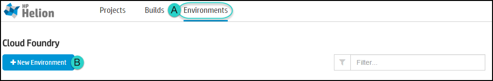
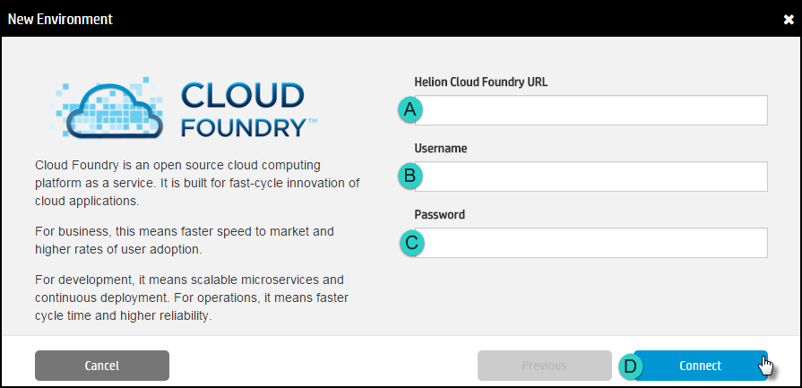
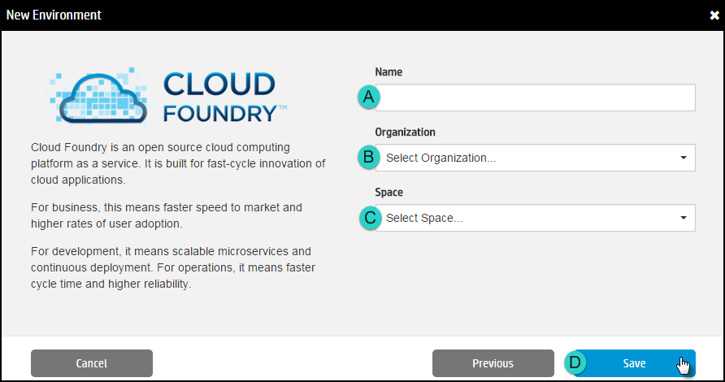
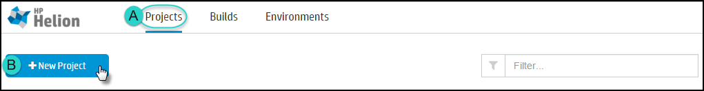
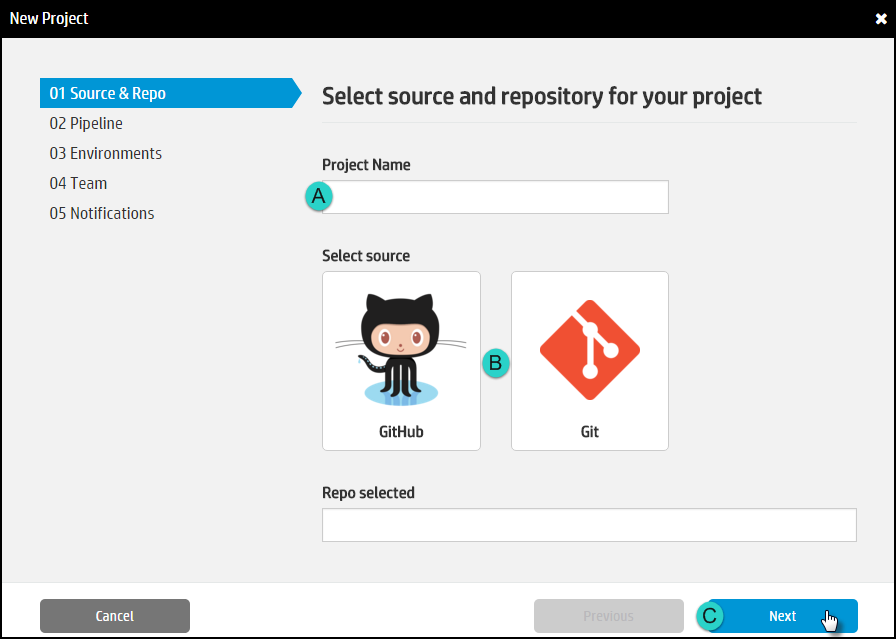
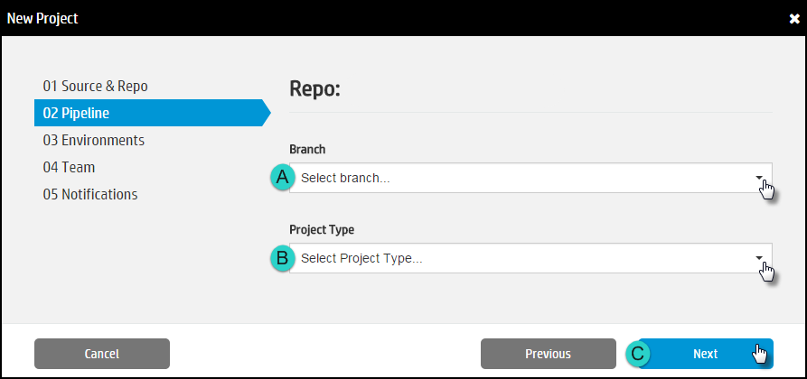
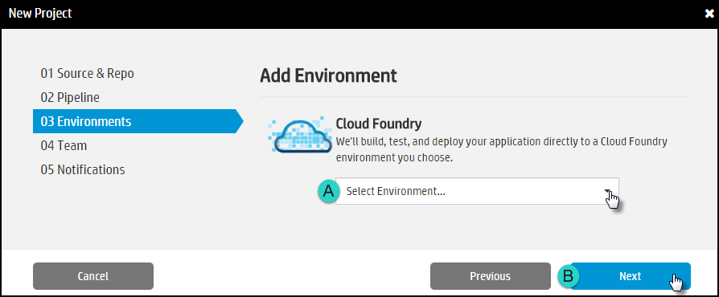
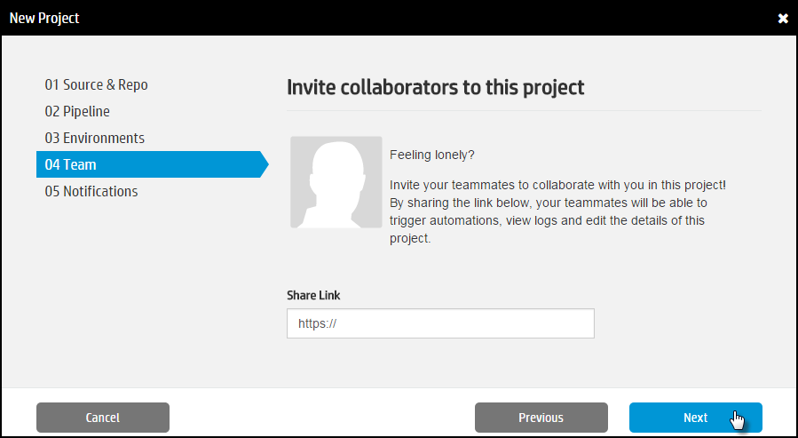
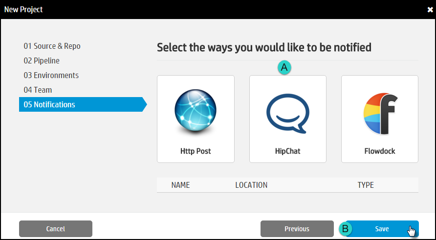
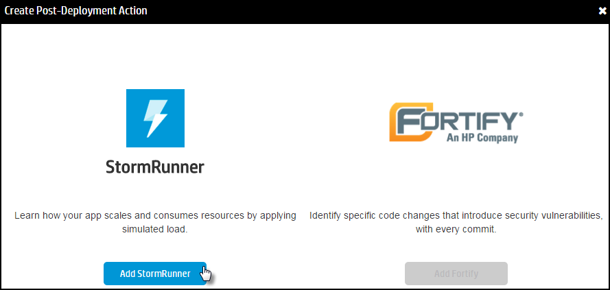

The true advantage of continuous integration is creating a build-test-deploy cycle which will
occur automatically whenever a change is committed.
When a pull request is received, developers can preview a temporary
deployment before approving the proposed changes. Approving the pull request
triggers the normal build-test-deploy cycle.
You will need:
- An application to deploy.
- An instance of the Helion Code Engine application installed.
- The access credentials for a valid target environment.
Overview
Projects contain information specifying what will happen each time the application is built:
which environment to deploy the application to, which tests to run, who should be
notified, and how that notification should be delivered.
After the cycle is defined, each build will automatically deploy the app to the
target environment, run the specified tests, and send relevant notifications.
Specify an Environment
- Click the Environments tab and then click New Environment.


- Provide a descriptive Name for this environment.
- Click the Type of environment to create.
- CloudFoundry: Deploys the application to a Cloud Foundry
endpoint. At this time, only Helion Cloud Foundry environments
are supported.
- Docker: Builds the application and pushes the image to a
public or private DockerHub repository.
- Lattice: Deploys the application to a simplified container
cluster.
- Click Next.
- Provide the required credentials and then click Connect.

- Provide a descriptive Name for this Environment.
- Select the target Organization. If the target Organization does not
appear in the list, you may have to create it.
- Select the target Space. If the target Space does not appear in the list,
you may have to create it.
- Click Save.
Create a Project
- Click the Projects tab and then click New Project.

- Specify the source for this project:

- Enter a Project Name.
- Select a source:
- GitHub: Click to connect to a repository hosted on GitHub
that you own or have admin rights to. Select the repository to
associate with this project and then click Select.
- Git: Connect to a repository hosted locally. Enter the
Name of the repo and the Clone URL and click
Select.
- Click Next.
- Define the Pipeline:

- Branch: Select the target environment to deploy to. If the target
environment has not yet been created, click Create New
Environment.
- Project Type: Select the appropriate development language.
- Click Next.
- Define the Environment

- Team

- Notification.

- Select the Type of Notification and then
provide the required credentials.
- HTTP Post
- Notification Target Name: Enter the name of the person
to notify.
- HTTP Endpoint: Specify an endpoint where HelionCI events
should be sent. Very similar to defining a webhook.
Examples would be the URL of an internal website, a
communication tool, or an RSS feed.
- Token: Generate a token as required for the target
endpoint. The method will vary depending on the target.
- Click Save.
- HipChat
- Notification Target Name: Enter the name of the person
to notify.
- Hipchat Room Number: How to Find
- Token: How to Generate
- Click Save.
- Flowdock
- Click Save.
Add Post-Deployment Tasks
- Click the Projects tab.
- Find the target project in the list and click View Details.
- Scroll down to the Post Deploy Actions section and click New Action.
- Select the desired Post Deployment Action.
Note: At this time, only StormRunner actions
are supported.

- Specify the information required for the action.
- For StormRunner load testing:
- Create a new StormRunner Account.
- Note your Username, Password and Tenant ID.
- Create a test and note the Test Number.
- Provide an Action Name to identify what this test does.
- Click Save.
Commit and Build
Direct commits to the repository trigger the full automated build-test-deploy cycle. Pull
requests, however, need to be approved. If the build runs and the test succeed, a temporary deployment is created where the proposed change can be reviewed.
When the pull request is approved, the temporary deployment is deleted and the build
is deployed to the specified final environment (staging, test, production, etc.) If
the pull request is not approved, the temporary deployment is deleted and the rest
of the cycle does not occur.
The temporary deployments can be accessed in multiple ways.
- Notifications contain a link.
- The Pull Request contains a link.
- Click the Builds tab. Find the build in the list.
In the Result column, click the View link.